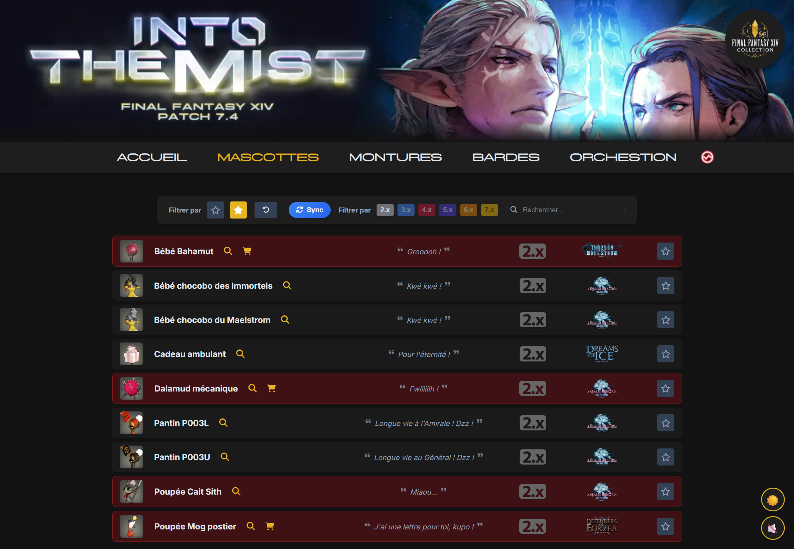
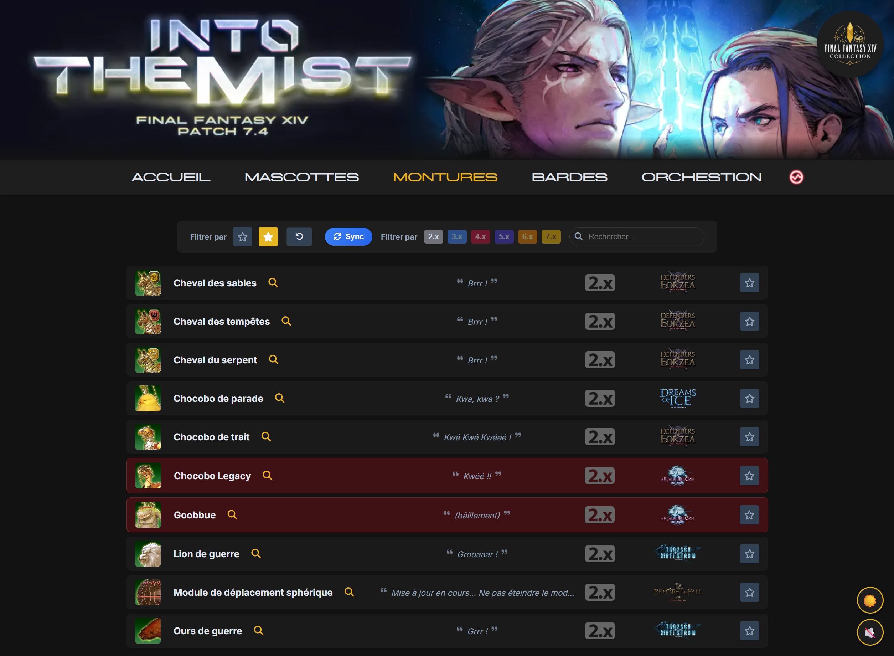
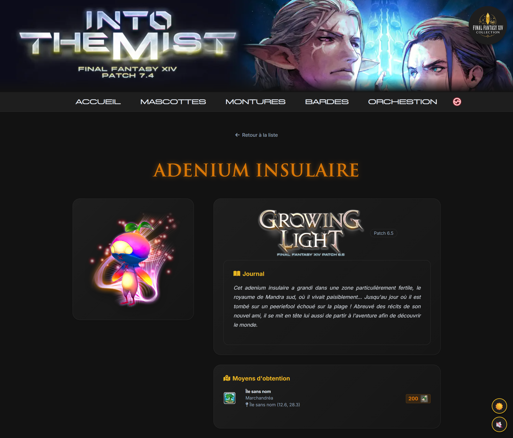
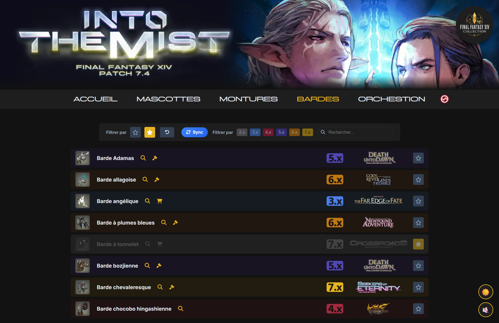
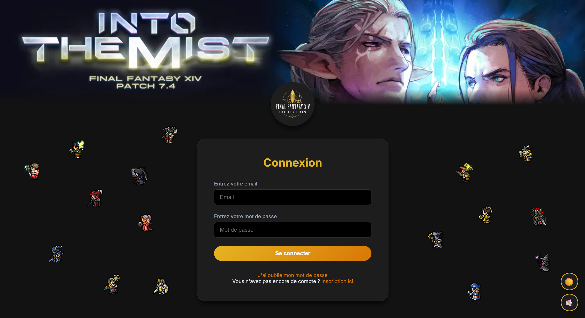

Screenshots
Aperçu de l'application
Cliquez sur une capture pour l'agrandir.

Dashboard — Vue d'ensemble

Page Mascottes

Page Montures

Modale de détail

Page Bardes de chocobo

Page de connexion